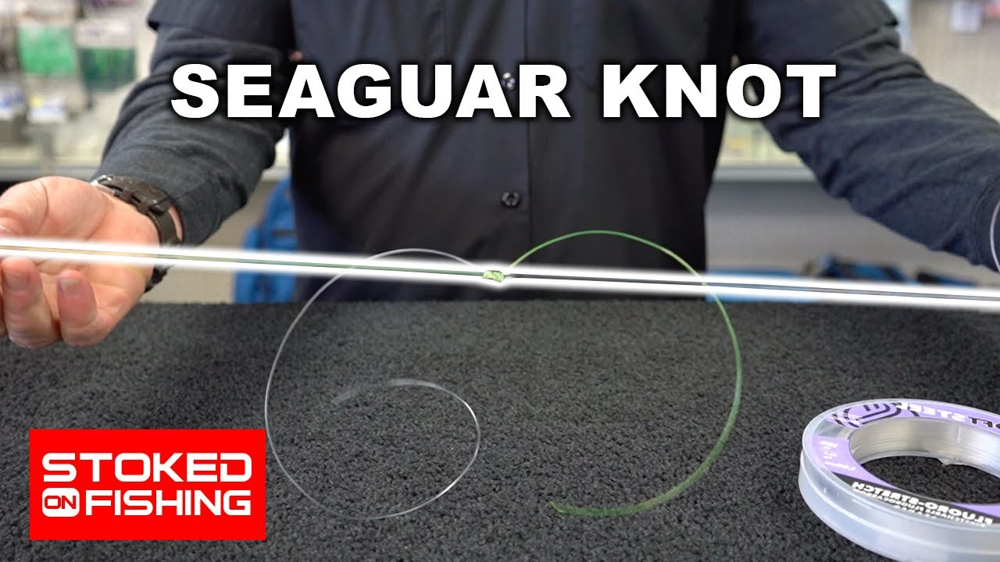
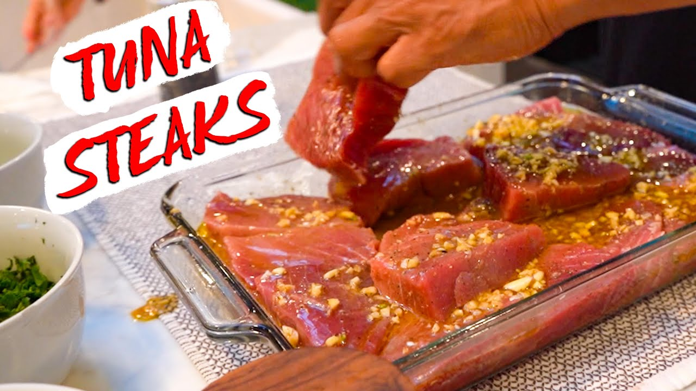

<!DOCTYPE html>
<html lang="en">

<head>
    <meta charset="UTF-8">
    <meta http-equiv="X-UA-Compatible" content="IE=edge">
    <meta name="viewport" content="width=device-width, initial-scale=1.0">
    <title>Hey What's up?</title>
    <link rel="stylesheet" href="style.css">
    <link rel="stylesheet" href="https://unpkg.com/aos@next/dist/aos.css" />
</head>

<body>


    <div class="allWrapper">

        <div class="overlay ">
            <div class="overlayContainer">
                <div class="overlayContent">
                    
                    <h1>Christopher Dillon Pereira</h1>
                </div>
            </div>
        </div>

        <div class="allContent">
            <div class="noAction scrollify" id="noAction"
                style="display: none; height: 0; width: 0; position: absolute; top: -200px;"></div>
            <div class="noAction2" id="noAction2" style="display: block; height: 0; width: 100%;" id="noAction2"></div>

            <div class="home scrollify bgColor roundSpace" id="home">
                <div class="topBanner topBannerGlobal">
                    <div class="topBannerLinks topLinkGlobal forFont">
                        <ul data-aos="fade-right">
                            <li><a href="#home"><i>Home</i></a></li>
                            <li><a href="#about"><i>About</i></a></li>
                            <li><a href="#contact"><i>Contact</i></a></li>
                        </ul>
                    </div>
                    <div class="topBannerImg topImgGlobal" data-aos="fade-up">
                        
                    </div>
                </div>
                <p>When you’re Stoked On Fishing, it’s exciting to get ready, go through your gear, look at lures, line
                    up some reels and talk fishing stories with anticipation.
                    When you’re fired up to fish the next day, you can’t even get to sleep the night before because
                    you’re thinking about getting on the water and making that first
                    cast. Fishing gets your heart racing, and it puts a smile on your face every time you get to go.<br>
                    Stoked on Fishing is a unique, 30-minute HD travel adventure fishing show that captures exciting
                    storylines behind every fishing excursion.
                    Executive Producer Shea McIntee takes you to the hottest fresh and saltwater destinations around the
                    globe and tags along with Stoked anglers who love the
                    sport of Fishing. Stoked On Fishing is filmed and produced by fishermen for fishermen.</p>
                <div class="stockedOnFishing" data-aos="fade-up">
                    
                </div>
                <div class="fishMenu">
                    <div class="fishMenuWrapper">
                        <div class="fishLine1 fishLine" data-aos="fade-up">
                            <div class="fishImg">
                                
                            </div>
                            <div class="fishImg">
                                
                            </div>
                            <div class="fishImg">
                                
                            </div>
                        </div>
                        <div class="fishLine2 fishLine" data-aos="fade-up">
                            <div class="fishImg">
                                
                            </div>
                            <div class="fishImg">
                                
                            </div>
                            <div class="fishImg">
                                
                            </div>
                        </div>
                        <div class="fishLine3 fishLine" data-aos="fade-up">
                            <div class="fishImg">
                                
                            </div>
                            <div class="fishImg">
                                
                            </div>
                            <div class="fishImg">
                                
                            </div>
                        </div>
                        <div class="fishLine4 fishLine" data-aos="fade-up">
                            <div class="fishImg">
                                
                            </div>
                            <div class="fishImg">
                                
                            </div>
                            <div class="fishImg">
                                
                            </div>
                        </div>
                    </div>
                </div>
                <p>One of my primary responsibilities is assembling recorded material into a suitable finish product
                    ready for broadcasting as an editor. Typically I am
                    given a folder of footage from each fishing trip. I am then tasked with organizing and creating
                    engaging as much engaging content as possible with the foot-age. This includes full episodes aired
                    on fox sports west, commercials for our show’s sponsors, and shorter videos for social media,
                    including Facebook,
                    Instagram, and YouTube. Since we fish in the same or similar destinations, we consistently have
                    issues creating an engaging story around fishing. I tackle this
                    issue by creating an exciting storyline around each video. Some examples are including our drone
                    footage as part of the action, teaching down fish. Others
                    have catching and cooking segments and how-to videos.</p>
                <div class="cavalla" data-aos="fade-up">
                    
                </div>
                <p style="font-size: 23px;">One of our sponsors, Okuma sport fishing, hired us to produce a commercial
                    for their new reel, the
                    Okinawa
                    Cabala. With a shortlist of specs and a black and white logo, I came up with this exciting kinetic
                    typography 60-second commercial that they loved. </p>
                <div class="stokedFishingOfficial">
                    
                </div>
                <p style="padding-top: 0; font-size: 23px;">When I first began working for Stoked On Fishing, we sold
                    merchandise consisting of black tee-shirts and black
                    hats without logo printed. Our company would have them printed in bulk and deal with shipments
                    ourselves. The
                    profit margins were low, and the work hours were high. To resolve this issue, I updated our clothing
                    line with new
                    custom designs and found a print-on-demand company to handle production, inventory, and merchandise
                    shipping.
                    I also designed our Shopify website stokedonfishinggear.com and conduct customer service.</p>
                <div class="footerLinks">
                    <ul>
                        <li><a href="#">EMAIL</a>-----</li>
                        <li><a href="#">INSTAGRAM</a>-----</li>
                        <li><a href="#">LINKEDIN</a></li>
                    </ul>
                </div>
            </div>
            <div class="montereyTour scrollify bgColor roundSpace" id="montereyTour">
                <div class="tourTopBanner topBannerGlobal">
                    <div class="topTourLinks topLinkGlobal forFont">
                        <ul data-aos="fade-right">
                            <li><a href="#home"><i>Home</i></a></li>
                            <li><a href="#about"><i>About</i></a></li>
                            <li><a href="#contact"><i>Contact</i></a></li>
                        </ul>
                    </div>
                    <div class="topTourImg topImgGlobal" data-aos="fade-up">
                        
                    </div>
                </div>
                <div class="tourSign">
                    <div class="tourLogo">
                        
                    </div>
                    <div class="tourSignText">
                        <p>My girlfriend and I were very great for a discount by Monterey Turing Vehicles and thought
                            they needed some more admirable photos for their
                            website. As a gift, we suppressed them with these. </p>
                    </div>
                </div>
                <div class="ridingGirl" data-aos="fade-up">
                    
                </div>
                <div class="ridingGirl" data-aos="fade-up">
                    
                </div>
                <div class="ridingGirl" data-aos="fade-up">
                    
                </div>
                <div class="ridingGirl" data-aos="fade-up">
                    
                </div>
                <div class="footerLinks">
                    <ul>
                        <li><a href="#">EMAIL</a>-----</li>
                        <li><a href="#">INSTAGRAM</a>-----</li>
                        <li><a href="#">LINKEDIN</a></li>
                    </ul>
                </div>
            </div>
            <div class="paladar scrollify bgColor roundSpace" id="paladar">
                <div class="paladarTopBanner topBannerGlobal">
                    <div class="topPaladarLinks topLinkGlobal forFont">
                        <ul data-aos="fade-right">
                            <li><a href="#home"><i>Home</i></a></li>
                            <li><a href="#about"><i>About</i></a></li>
                            <li><a href="#contact"><i>Contact</i></a></li>
                        </ul>
                    </div>
                    <div class="topPaladarImg topImgGlobal" data-aos="fade-up">
                        
                    </div>
                </div>
                <div class="paladarSays">
                    <div class="paladarLogo">
                        
                    </div>
                    <div class="paladarInfo">
                        <p>Still, in her 80’s, my great aunt wakes up early every
                            morning and cooks for the entire family. Outside of
                            teaching history, it has been her life’s passion. One
                            day I came across a box full of notes, and I realized
                            it was a book full of her and other family recipes.
                            The pages were old brittle, and many were tearing. I
                            knew I had to do something with them and thought
                            the most appropriate action should be to design and
                            print a hardcover cookbook out of them to surprise
                            my aunt. And so I did. </p>
                    </div>
                </div>
                <div class="paladarFullWidthBanner">
                    
                </div>
                <div class="footerLinks">
                    <ul>
                        <li><a href="#">EMAIL</a>-----</li>
                        <li><a href="#">INSTAGRAM</a>-----</li>
                        <li><a href="#">LINKEDIN</a></li>
                    </ul>
                </div>
            </div>
            <div class="monkey scrollify bgColor roundSpace" id="monkey">
                <div class="monkeyTopBanner topBannerGlobal">
                    <div class="topMonkeyLinks topLinkGlobal forFont">
                        <ul data-aos="fade-rght">
                            <li><a href="#home"><i>Home</i></a></li>
                            <li><a href="#about"><i>About</i></a></li>
                            <li><a href="#contact"><i>Contact</i></a></li>
                        </ul>
                    </div>
                    <div class="topMonkeyImg topImgGlobal" data-aos="fade-up" id="monkeyImg">
                        
                    </div>
                </div>
                <div class="monkeySays" id="monkeySays">
                    <div class="monkeyLogo">
                        
                    </div>
                    <div class="monkeyInfo">
                        <p>Unfortunately, I didn’t know about my friend’s
                            wedding registries, so instead of getting their eight
                            5-piece plate setting set, they got a kids book written
                            about them and their two-year-old daughter instead.
                        </p>
                    </div>
                </div>
                <div class="monkeyFullWidthBanner" id="monkeyBanner">
                    
                </div>
                <div class="footerLinks">
                    <ul>
                        <li><a href="#">EMAIL</a>-----</li>
                        <li><a href="#">INSTAGRAM</a>-----</li>
                        <li><a href="#">LINKEDIN</a></li>
                    </ul>
                </div>
            </div>
            <div class="model scrollify bgColor roundSpace" id="model">
                <div class="modelTopBanner topBannerGlobal">
                    <div class="topModelLinks topLinkGlobal forFont">
                        <ul data-aos="fade-right">
                            <li><a href="#home"><i>Home</i></a></li>
                            <li><a href="#about"><i>About</i></a></li>
                            <li><a href="#contact"><i>Contact</i></a></li>
                        </ul>
                    </div>
                    <div class="topModelImg topImgGlobal" data-aos="fade-up" id="modelImg">
                        
                    </div>
                </div>
                <div class="modelTopPara">
                    <p>Mart of my major courses included 3D molding and design. What more fun things are there to create
                        than a 3D
                        Yoda poison, a frighteningly realistic new mantis species, or a 3D jellyfish animation.</p>
                </div>
                <div class="jellyfishImg" id="jellyfish">
                    
                </div>
                <div class="babyYoda">
                    <div class="yodaContainer oneContainer" id="yodaContainer">
                        <div class="yodaImg oneImg" data-aos="fade-up">
                            
                        </div>
                        <div class="yodaInfo oneInfo" data-aos="fade-right">
                            <p>Baby Yoda potion was my first experience working in 3D. My assignment was to sample free
                                3D
                                models from the internet and combine them to create a custom piece of art using Adobe
                                Dimension.
                                When I started this project, I had recently completed rewatching the Harry Potter
                                series and middle of
                                the Mandalorian series. I decided to choose a theme
                                combining the two. I started by creating a 3D vase in
                                photoshop. After downloading some of the 3D models and a couple of noodling hours, I
                                came up with
                                the baby Yoda potion. </p>
                        </div>
                    </div>
                    <div class="bugContainer oneContainer" id="bugContainer">
                        <div class="bugInfo oneInfo" data-aos="fade-left">
                            <p>This project was an assignment as part of an advanced 3D molding and rendering class. My
                                mission
                                was to create a new bug species. I approached this
                                assignment by starting with a spline linear spline
                                and drawing my insect’s shape cut in half. Then I
                                used the lath tool to start his body. Using the correction deformed, I began to modify
                                individual points
                                to alter their shape. After a couple of hours of noodling, my bug shape was complete.
                                After creating
                                custom textures and creating a realistic background,
                                my insect was finished. </p>
                        </div>
                        <div class="bugImg oneImg" data-aos="fade-up">
                            
                        </div>
                    </div>
                    <div class="footerLinks">
                        <ul>
                            <li><a href="#">EMAIL</a>-----</li>
                            <li><a href="#">INSTAGRAM</a>-----</li>
                            <li><a href="#">LINKEDIN</a></li>
                        </ul>
                    </div>
                </div>
            </div>
            <div class="about scrollify bgColor roundSpace" id="about">
                <div class="aboutTopBanner topBannerGlobal">
                    <div class="topAboutLinks topLinkGlobal forFont">
                        <ul data-aos="fade-righ">
                            <li><a href="#home"><i>Home</i></a></li>
                            <li><a href="#about"><i>About</i></a></li>
                            <li><a href="#contact"><i>Contact</i></a></li>
                        </ul>
                    </div>
                    <div class="topAboutImg" id="jelly-effect" data-aos="fade-up">
                        
                        <div class="chrisInfo">
                            <h1>Chris Pereira</h1>
                            <div class="chrisInfoWrapper">
                                <div class="chrisImg">
                                    
                                </div>
                                <p>I AM A STUDENT WHO
                                    CURRENTLY WORKS AS A
                                    VIDEO EDITOR,
                                    PHOTOGRAPHER, AND
                                    MULTIMEDIA SPECIALIST</p>
                            </div>
                        </div>
                    </div>
                </div>
                <div class="chrisText">
                    <p>Chris Pereira is a visual artist based in Huntington Beach, California. Having explored content
                        creation since childhood, Chris has
                        been working on freelance video editing, graphic design, and photography work and is currently
                        focusing on projects television show
                        Stoked On Fishing on Fox Sports West. Chris is Adobe Certified in
                        Adobe Pr Pro, Adobe Photoshop, Adobe Illustrator, and will have a
                        Bachelors Degree in Digital Media Design in the coming year.</p>
                </div>
                <div class="footerLinks">
                    <ul>
                        <li><a href="#">EMAIL</a>-----</li>
                        <li><a href="#">INSTAGRAM</a>-----</li>
                        <li><a href="#">LINKEDIN</a></li>
                    </ul>
                </div>
            </div>
            <div class="contact scrollify roundSpace" id="contact">
                <div class="contactWrapper bgColor">
                    <div class="homeLink forFont">
                        <ul data-aos="fade-up">
                            <li><a href="#home"><i>Home</i></a></li>
                        </ul>
                    </div>
                    <div class="contactInfo" data-aos="fade-left">
                        <h1>Contact</h1>
                        <span>Email: Chris@stokedonfishing.com</span>
                        <span>Phone: (714)262-1231</span>
                        <span>Location: Huntington Beach, CA</span>
                    </div>
                </div>
            </div>

        </div>

    </div>

    <script src="script.js"></script>

    <script src="https://cdnjs.cloudflare.com/ajax/libs/gsap/3.6.1/gsap.min.js"></script>
    <script src="https://code.jquery.com/jquery-3.6.0.js"
        integrity="sha256-H+K7U5CnXl1h5ywQfKtSj8PCmoN9aaq30gDh27Xc0jk=" crossorigin="anonymous"></script>

    <script src="https://cdnjs.cloudflare.com/ajax/libs/scrollify/1.0.21/jquery.scrollify.min.js"
        integrity="sha512-UyX8JsMsNRW1cYl8BoxpcamonpwU2y7mSTsN0Z52plp7oKo1u92Xqfpv6lOlTyH3yiMXK+gU1jw0DVCsPTfKew=="
        crossorigin="anonymous"></script>
    <script src="https://ajax.googleapis.com/ajax/libs/jquery/3.4.1/jquery.min.js"></script>
    <script src="https://unpkg.com/aos@next/dist/aos.js"></script>

    <script src="https://unpkg.com/jelly-scroll/dist/browser/index.js"></script>


    <script>


        $(function () {
            $.scrollify({
                section: ".scrollify",
                touchScroll: false,
                // touchScroll: $.scrollify.destroy(),
                scrollSpeed: 1300,
            });
        });


        $('a[href*="#"]:not([href="#"])').click(function () {
            if (location.pathname.replace(/^\//, '') == this.pathname.replace(/^\//, '') && location.hostname == this.hostname) {
                var target = $(this.hash);
                target = target.length ? target : $('[name=' + this.hash.slice(1) + ']');
                if (target.length) {
                    $('html, body').animate({
                        scrollTop: target.offset().top
                    }, 1200);
                    return false;
                }
            }
        });

        $.noConflict(); 
        jQuery(function ($) {
            $(".heroStr").tipTip();
        });


        AOS.init({
            offset: 100
        });


        
        JellyScroll('noAction', {
            friction: .4,
            strength: 30
        });
        JellyScroll('noAction2', {
            friction: .4,
            strength: 30
        });
        JellyScroll('home', {
            friction: .6,
            strength: 80
        });
        JellyScroll('montereyTour', {
            friction: .4,
            strength: 30
        });
        JellyScroll('monkey', {
            friction: .4,
            strength: 30
        });
        JellyScroll('paladar', {
            friction: .4,
            strength: 30
        });
        JellyScroll('model', {
            friction: .4,
            strength: 30
        });
        JellyScroll('about', {
            friction: .4,
            strength: 30
        });
        JellyScroll('contact', {
            friction: .4,
            strength: 30
        });


    </script>


</body>

</html>
